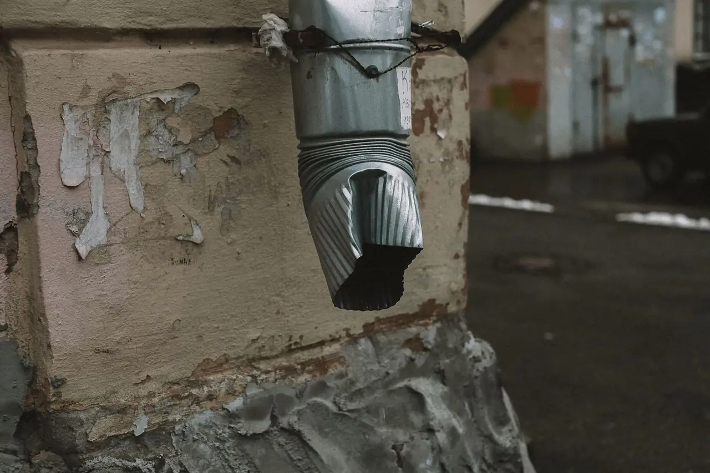
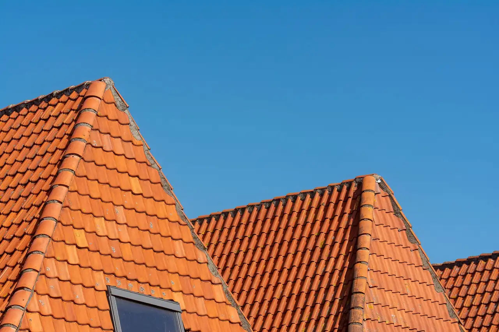
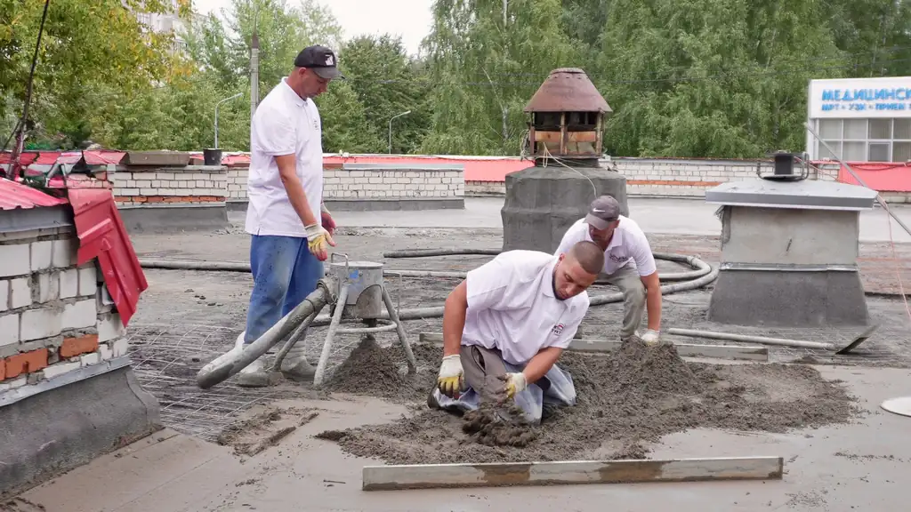
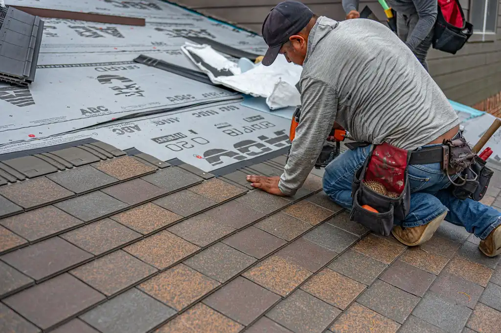
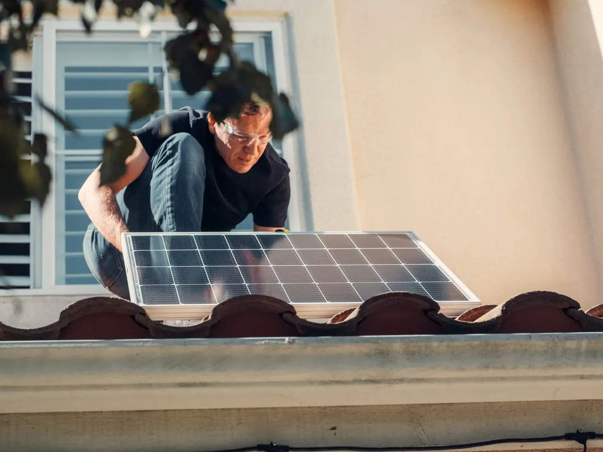

Focused arrival windows
Useful updates and clear arrival timing.

Gutter Installation Panama City FL is crucial for maintaining your home's integrity. With our affordable gutter installation services in Panama City, you can prevent water damage and enhance your property's value.
Useful updates and clear arrival timing.
Review the approach and price before deciding.
Equipped vehicles and respectful cleanup.
Neighbors serving neighbors with follow-through.
Our gutter installation service includes everything from consultation to final inspection, ensuring a comprehensive solution for your home.
We provide a no-obligation consultation to assess your gutter needs and recommend the best solutions.
Choose from a range of durable materials, including aluminum and copper, tailored to your budget and aesthetics.
Our licensed team ensures that your gutters are installed correctly, adhering to Florida Building Code Compliance.
We conduct a thorough inspection post-installation to ensure everything is functioning as intended.
Share what is happening and receive a clear next step from the local team.
Gutter Installation Panama City FL is the process of installing drainage systems that channel rainwater away from your home, preventing water damage and foundation issues. This essential service ensures that your roof and walls are protected from excess moisture.
In Panama City, where heavy rains are common, proper gutter installation is vital. Homeowners often face issues like roof leaks and foundation erosion due to inadequate drainage. Our Panama City gutter installation services address these problems effectively.

We start with a free consultation to assess your needs and provide a detailed estimate for your gutter installation.
Choose from various materials like aluminum, vinyl, or copper to suit your home's style and budget.
Our team prepares the site and uses safety harnesses and ladders to ensure a secure installation process.
On the scheduled day, our experienced crew installs the gutters, ensuring proper alignment and drainage.
After installation, we conduct a thorough inspection to ensure everything is functioning correctly and meets Florida Building Code Compliance.

Used for securing gutters to the roof structure, ensuring a tight fit.
Ensures the safety of our team while working at heights during installation.
Essential for accessing roofs and installing gutters safely.
Used for applying sealants and ensuring a watertight installation.
We adhere to strict building codes to ensure all installations meet safety and quality standards.
Each installation is followed by a thorough inspection to guarantee optimal performance and longevity.
We guide homeowners in selecting the best materials for their specific needs and budget.

We assess the damage and recommend gutter installation to prevent future issues. This ensures your home is protected from further water damage.
We inspect existing gutters and recommend installation of new ones if necessary. This provides peace of mind that your new home is protected from water damage.
Our team evaluates the gutters and installs new ones if needed. This resolves the issue and prevents further staining and damage.
In Panama City, the humid subtropical climate requires gutters that can handle heavy rainfall and prevent water damage. Our gutter installation services are tailored to meet local building codes and address common issues like roof leaks and foundation erosion. We use high-quality materials from trusted brands like GAF and CertainTeed, ensuring durability and effectiveness. Additionally, we understand the unique challenges posed by the local environment, such as moss growth and ventilation problems, allowing us to provide solutions that last.
Known for its older homes, many of which require updated gutter systems to prevent water damage.
Properties near the beach often face unique drainage challenges due to sand erosion.
Urban properties here benefit from modern gutter solutions that blend aesthetics with functionality.
Can lead to quicker deterioration of gutters if not installed properly.
Increase the need for efficient drainage systems to prevent flooding and water damage.
Before installation, this home had visible water damage on the foundation due to inadequate drainage.
After new gutters were installed, the homeowner reported no further water issues, saving thousands in potential repairs.
Maintenance: Regular cleaning of gutters is recommended to maintain optimal performance.
The homeowner experienced leaks inside the house due to clogged gutters overflowing.
Post-installation, the gutters effectively directed water away, eliminating leaks and enhancing home comfort.
Maintenance: Annual inspections and cleaning will ensure continued effectiveness.
Landscaping was eroding away due to improper water drainage.
With new gutters, the landscaping was preserved, maintaining the home's curb appeal.
Maintenance: Implementing a regular maintenance plan will protect both the landscaping and the home.
Gutter installation addresses several common issues faced by homeowners in Panama City.
Ignoring this can lead to serious foundation damage and costly repairs. Our gutter installation effectively directs rainwater away from the foundation, preventing water pooling and potential damage.
Overflowing gutters can lead to roof leaks and damage to siding. We install high-quality gutters that minimize clogs and ensure proper drainage, protecting your home from leaks.
Without proper drainage, landscaping can wash away, leading to increased maintenance costs. Our gutters are designed to manage water flow, preserving your landscaping and reducing erosion.
$180 - $450 depending on scope
Typical 2026 pricing for gutter installation in Panama City ranges from $180 to $450, depending on material choice and home size. Factors affecting cost include the complexity of the installation, the type of gutters selected, and any additional features such as downspouts or gutter guards. Our affordable gutter installation services in Panama City ensure you receive quality work without breaking the bank.
Investing in quality gutter installation protects your home from water damage and enhances its value.
Different materials like aluminum or copper can vary significantly in price, affecting overall costs.
Larger homes require more materials and labor, increasing the installation cost.
Homes with complex roof designs may require more time and specialized techniques, raising the price.
With over 15 years of experience in gutter installation, our team is well-versed in local building codes and best practices.
The benefits include preventing water damage, enhancing curb appeal, and reducing erosion risks, ensuring your home remains safe and attractive.
Typically, gutter installation takes about 4-6 hours, depending on the home's size and the complexity of the job.
We install a variety of gutters, including aluminum, vinyl, and copper options, tailored to meet your home's specific needs.
In 2026, the cost of gutter installation in Panama City ranges from $180 to $450, depending on material and home size.
Not seeing your question? Our local team can help you understand urgency, scheduling and what to expect.
Ask the local team
Our roof installation services complement gutter installation by ensuring your entire roofing system is watertight.
View service
We provide roof repair services that work hand-in-hand with gutter installation to prevent leaks and water damage.
View service
If your existing gutters need repairs, we offer comprehensive gutter repair services to maintain their functionality.
View service
Regular roof inspections help identify issues that can affect gutter performance, ensuring your home stays protected.
View service
We invite you to reach out for any roofing needs. Our team is available to assist you promptly, ensuring a quick response.